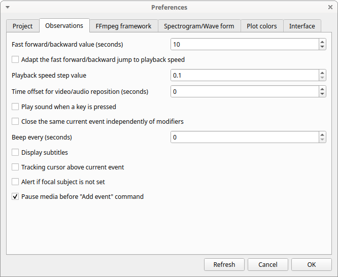
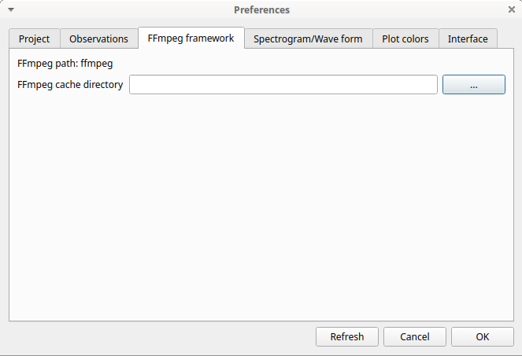
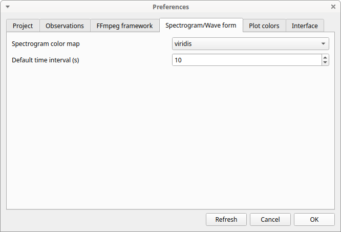
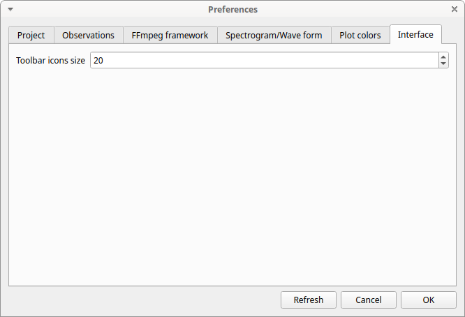

Preferences
You can customize BORIS using the Preferences window (File > Preferences)
Project preferences

- Refresh button
-
Option to reinitialize the configuration to default. BORIS will be closed.
- Default project time format
-
This option allows the user to choose the format for displaying time in the project. Please note that time is internally always saved in seconds with a precision of 3 decimal digits
- Auto-save project every (minutes)
-
if set BORIS will save your project automatically every n minutes. 0 indicate no automatic backup. The project will be saved if the project is already saved and an observation is open.
- Separator for behavioural strings
-
Character (or string) used to separate behaviors when exporting events as behavioural strings. See also Behatrix
- Check for new version
-
Check for new version on BORIS web site every 15 days (internet access required)
Observations

- Fast forward/backward value (seconds)
-
This option allows the user to customize the amount of time for "jumping" forward or backward in media.
- Adapt the fast for/backward jump to playback speed
-
The jump value will be adapted to the playback speed.
- Playback speed step value
-
This value indicate how much the speed will be increased or decreased after pressing the change playback speed buttons.
- Time offset for media reposition (seconds)
-
This value indicates the time offset for repositioning the media after double-click on a row event of the Events table. 'for example -4 seconds indicates that after a double-click the media will be repositioned 4 seconds before the recorded event.'
- Play sound when a key is pressed
-
Activate a sound signal after every keypress event
- Close the same current event independently of modifiers
-
Option used to STOP the current behavior without regarding the modifiers
- Display subtitles
-
Option to display or hide the visualization of subtitles. In case of separate file, the file containing subtitles must have the same base name than the video files with a .srt extension.
- Tracking cursor above current event
-
Check this box to position the tracking cursor above the current event in events list table.
- Alert if focal subject is not set
-
If this option is activated BORIS will show an alert box if no focal subject is selected
- Pause media before "Add event" command
-
Option to pause the media before manually adding an event.
FFmpeg framework

The path for the ffmpeg executable program is displayed. The FFmpeg executable is included with BORIS for Windows. The FFmpeg framework is required to run BORIS.
- FFmpeg cache directory
-
This indicates the directory that will be used as image cache for frame-by-frame mode and spectrogram visualization. If you do not specify a path, BORIS will use the default temporary directory of your system.
Spectrogram / wave form

Spectrogram height
Select the height of generated spectrogram (in pixels). You will need to restart the current observation to apply changes.
Color map
Select the color map for displaying the generated spectrogram. See Matplotlib colormaps for details.
Plot colors
The color of behaviors in the plot events functions can be customized. The first color will be associated to the first behavior in your ethogram, the second color to the second behavior and so on. Various color formats can be used to specify a color: named color or hex RGB (like #0F0F0F). See https://matplotlib.org/api/colors_api.html and https://matplotlib.org/examples/color/named_colors.html for details
The reset colors to default button will reload the default colors.

Interface

Toolbar icon size
Set the height of the toolbar